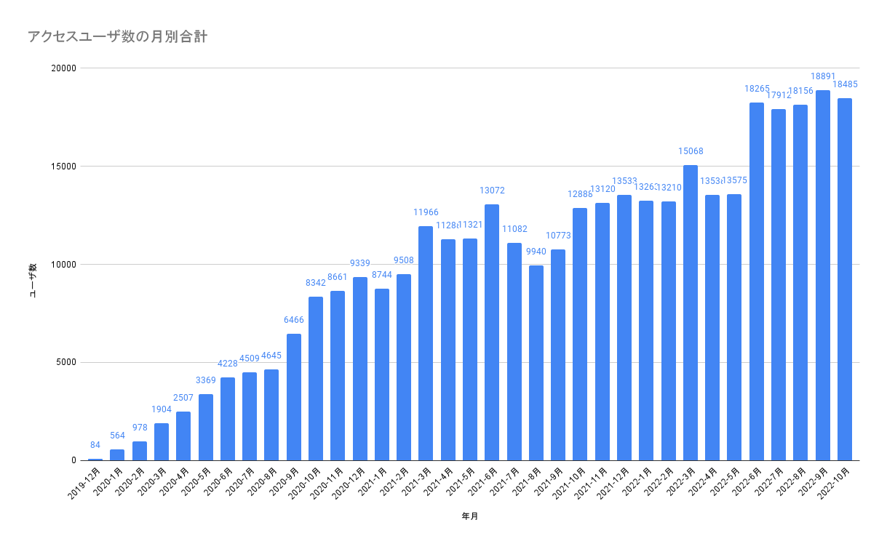
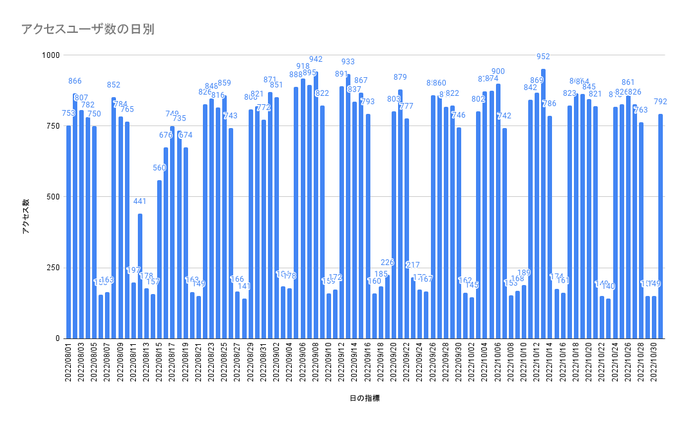

本ブログへのアクセス数メモ 2022年10月
久しぶりにGoogle Analyticsを確認してみた。下記はGAをソースにしてGoogle Spreadsheet でグラフ化。2019年12月にはてなからGithub Pagesに移行した後のデータとなる。メモ代わりのGithub Pages運用がここまでアクセス数が多いとは。平日は700-800PVでセッション数だと1000を超える日もある。HugoのSEOが強いのか、更新頻度が高いからなのか、Github Pagesが強いのか。Githubドメインが強いのか…。


関連しているかもしれない記事
- Hugo wowchemyのシンタックスハイライト変更
- Hugo AcademicのError failed to resolve output formatエラーについて
- Hugo wowchemy（旧Academic）における記事幅の調整方法
- Hugoにおける実行ファイルのnot foundについて
- Hugo wowchemy（旧Academic）におけるbuilding siteエラー